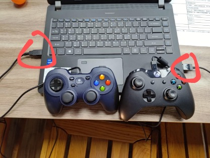

因為我們的機器功能非常多 只有一個搖桿會讓操作者不方便操控，因此我新增了兩個搖桿，並給兩位操作者操控，按照兩位操作者的需求，我寫了xbox的搖桿，是操作者1習慣用的搖桿，用來控制底盤跟climber還有一些特殊功能，另外一個是joystick羅技的搖桿，用來控制整個射擊架構。
package frc.robot;
//引入函式庫
import edu.wpi.first.wpilibj.Joystick;
import edu.wpi.first.wpilibj.XboxController;
//搖桿初始化
private Joystick stick = new Joystick(0);//port:0
private XboxController xbox = new XboxController(1);//port:1
1.兩個搖桿插在電腦上的位置不能相反: 如果相反則兩個搖桿的功能會完全對調 (故障排除: 如果發現搖桿功能異常,先檢查插槽位置是否正確)
